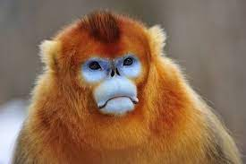

Golden Snub-Nosed Monkeys
William Winn

Scientific Classification:
| Kingdom: |
Animalia
|
| Phylum: |
Chordata |
| Class: |
Mammalia |
| Order: |
Primates |
| Suborder: |
Haplorhini |
| Infraorder: |
Simiiformes |
| Family: |
Cercopithecidae |
| Genus: |
Rhinopithecus |
| Species: |
R. roxellana |
Here are some fun-facts about the Golden Snub-Nosed Monkey:
- It is aptly named for its bright orange fur and nose that makes it look like a Who from a Dr. Seuss novel!
- It is native to the temperate forests of central and southwest China
- Its herbivore diet consists mostly of the lichen growing on dead foliage
- Its thick fur allows it to
withstand colder average temperatures better than any other non-human primate
1
- It has been observed to live in groups ranging from 5-600 members
Click the link below to learn more!
1. The Official Golden Snub-Nosed Monkey Wikipedia Page